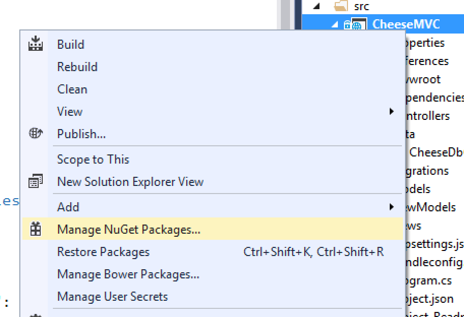
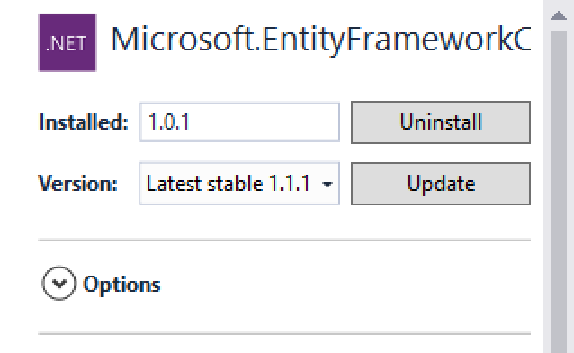
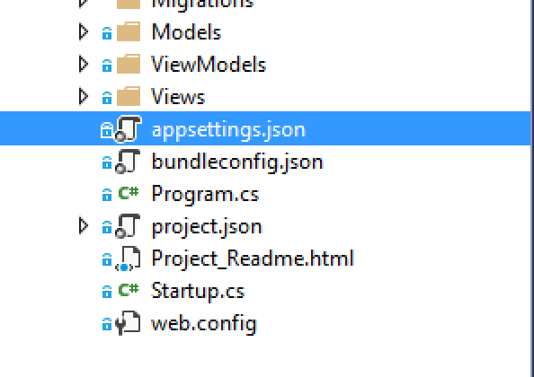
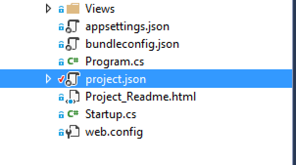
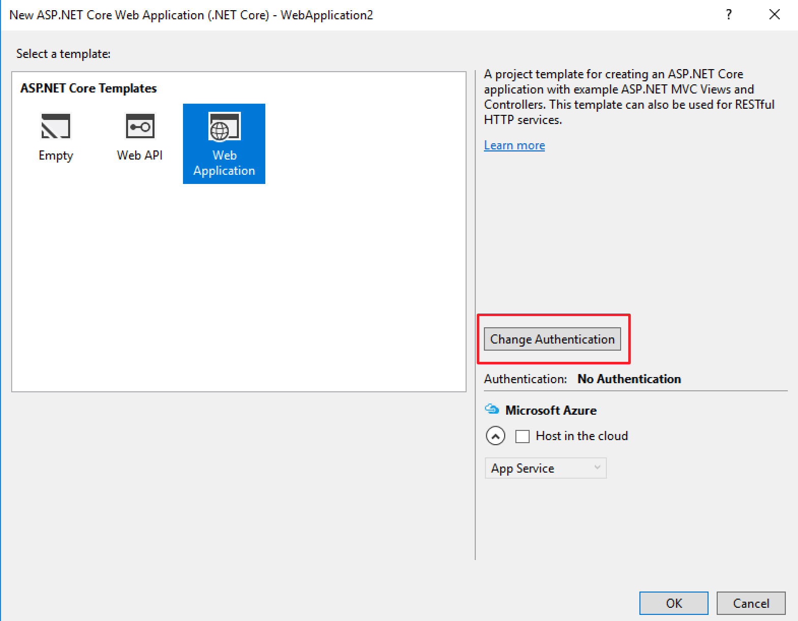
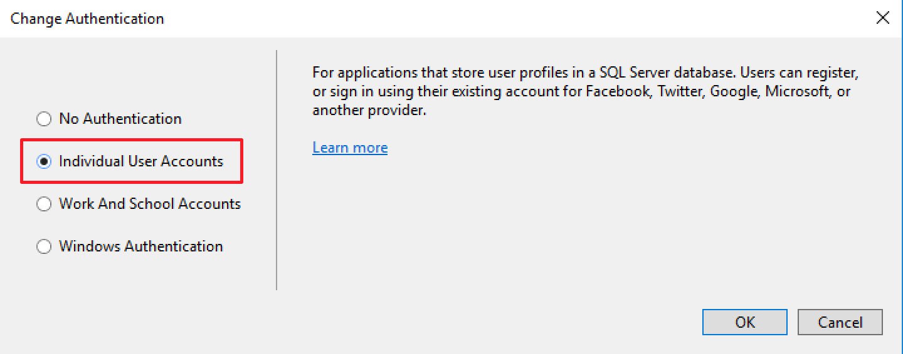

EntityFrameworkCore Setup
This article will show you how to enable the EntityFrameworkCore object-relational mapping framework. It assumes you are you are using Visual Studio 2015 v14 update 3.
These instructions will enable EntityFrameworkCore (EF Core) for a given ASP.NET Core MVC project. You will need to follow these steps for every project you want to use EF Core with. At the bottom of this article we introduce an easier way to enable EF Core for new projects.
For the purpose of illustration, all examples will assume you're working with the CheeseMVC project. If you use these instructions with another project, change project names accordingly.
Setting Up EntityFrameworkCore With an Existing App
- Open the NuGet Package Manager by right-clicking on the project name in the Solution Explorer and selecting Manage NuGet Packages. 
-
In the Browse tab of the package manager, search for
Microsoft.EntityFrameworkCore.SqlServer. Click on the matching package and select Version 1.0.1 from the pane at right.Then hit Install. You'll be asked to accept the license agreement for the package, and then you'll see some console output.
- Check the Include prerelease box right of the search box. Then search for
Microsoft.EntityFrameworkCore.Tools. Select the matching result and install Version 1.0.0-preview2-final. - In the Solution Explorer, open
appsettings.jsonAdd the following setting within the outer curly-braces.
"ConnectionStrings": { "DefaultConnection": "Server=(localdb)\\mssqllocaldb;Database=CheeseMVC;Trusted_Connection=True;MultipleActiveResultSets=true" },The full
appsettings.jsonfile will look like this:{ "ConnectionStrings": { "DefaultConnection": "Server=(localdb)\\mssqllocaldb;Database=CheeseMVC;Trusted_Connection=True;MultipleActiveResultSets=true" }, "Logging": { "IncludeScopes": false, "LogLevel": { "Default": "Debug", "System": "Information", "Microsoft": "Information" } } }This sets up a connection string for a local database, SQL Server Express LocalDB. This is a lightweight database that is useful for development. You would never use this database for an active public application (aka a "production application").
-
Open
project.json:In the
toolssection, add:"Microsoft.EntityFrameworkCore.Tools": "1.0.0-preview2-final"The full
toolssection should look like this:"tools": { "BundlerMinifier.Core": "2.0.238", "Microsoft.AspNetCore.Razor.Tools": "1.0.0-preview2-final", "Microsoft.AspNetCore.Server.IISIntegration.Tools": "1.0.0-preview2-final", "Microsoft.EntityFrameworkCore.Tools": "1.0.0-preview2-final" },This enables some command-line tools that we'll use to update databases after making changes to our model classes.
Setting Up EntityFrameworkCore With a New App
You can create a brand new project with the above packages and settings already in place by enabling individual user accounts in the New Project dialog.
When creating a new ASP.NET Core MVC app, select Change Authentication in the project template screen.

In the modal that opens, select Individual User Accounts.

Aside from enabling a local database and EntityFrameworkCore, this also (as you might expect) enables basic user account functionality. We'll look at how to use this functionality in a future lesson.